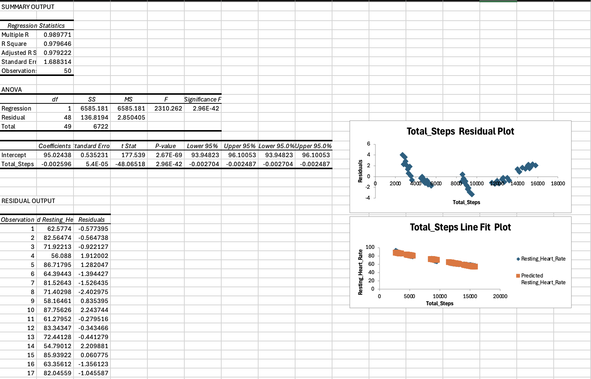

|
Mohammad Pouria Jeihouni
I currently work at TPH and am an Economics student at York University. My background in economics drives my passion for exploring the intersection of technological advancement and financial models. I am focused on applying data analysis to real-world economic challenges and developing a technical skill set that bridges these two fields. |

Backstory: This Python assignment was a significant challenge for me in ITEC 1010, initially feeling like a complex puzzle with missing pieces. It required many long nights, but I successfully developed a model that uses key economic indicators (GDP, unemployment) to predict potential technological adoption rates in developing markets. The model used foundational data analysis libraries and allowed me to visualize trends that are otherwise hidden. Figuring out how to accurately structure and represent the data was a critical technical hurdle, but overcoming that hurdle solidified my desire to pursue financial data visualization and algorithmic modeling.

Backstory: For my research project, I tackled the historical data collection methods of the Dominion Observatory, exploring how historical data is validated in a modern context. One of the unique aspects of this project was using Gemini to generate a conceptual, artistic image of the observatory as it may have looked in its prime, which added a conceptual layer to the analysis. Figuring out the specific data transmission methods and validating them against original sources was an intricate challenge. The final successful validation was a rewarding moment, connecting historical methodologies to modern technical analysis.
Python, Econometric Modeling, Financial Data Analysis, Historical Data Validation, Generative AI Conceptualization, Advanced Excel, Data Structure Visualization.